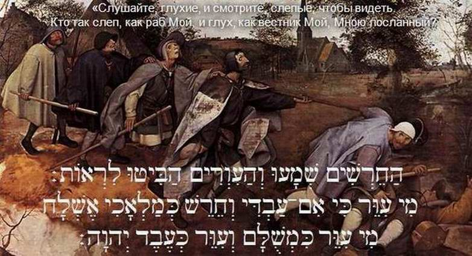

Свет Господень. БЕЦАЛЕЛЬ / Веселеил /
 Размышляя над именами Бецалеля, замечаем игру слов и игру смыслов. Как известно, тень рождается светом. Это как раз наш случай! Часть имени художника переводится именно как тень (БЕЦАЛЕЛЬ = БЕ-ЦЕЛЬ (в-тени)-ЭЛЬ (Бога)).
Размышляя над именами Бецалеля, замечаем игру слов и игру смыслов. Как известно, тень рождается светом. Это как раз наш случай! Часть имени художника переводится именно как тень (БЕЦАЛЕЛЬ = БЕ-ЦЕЛЬ (в-тени)-ЭЛЬ (Бога)).
А родным его отцом, по родословию, является Ури, что значит Свет. При том - Свет Господень. Так что рожденная от Света Тень в нашем случае воплощается в художника, рожденного в Египте от мужа, имя которому - Свет Божий.
Игра смыслов на этом не заканчивается. Размышляя о свойствах тени и ее отношениях со светом, можем извлечь для себя глубочайший смысл и значение этого имени.
Читайте также:
БЕЦАЛЕЛЬ. Призвание. (часть I) БЕЦАЛЕЛЬ. Под покровом Всевышнего. (часть II) БЕЦАЛЕЛЬ. Свет Господень (часть III) БЕЦАЛЕЛЬ. Дед ХУР (часть IV) БЕЦАЛЕЛЬ. Славящий Бога (часть V)
ФИЛЬМ: Эфраима Калиша
МУЗЫКА: Даниэля Круглова
Студия "Тора-Арт".
בצלאל בן אורי Бецалель — сын Ури
(Исх.31:2).
Все слова корня צֵל [цель] так или иначе связаны со светом, его проникающими лучами. Ури в переводе с иврита — светлый, светящийся. В этом слове можно увидеть также краткую форму имен: Уриэль (Свет Бога) и Урия (Свет Господень).

Еще имя Ури можно прочитать как состоящее из двух слов: УР-И: אור (свет) и буквы י, указывающее на великое имя Бога.
Так что, Ури — свет Господа. В книге Берейшит (Бытие) Тора повествует об особенном свете, явленном прежде творения светил небесных, солнца, луны, звезд. Именно поэтому царь Давид произносит странные на первый взгляд слова: «Во свете Твоем мы видим свет» (Пс.35:10). Наши мудрецы говорят, что свет, созданный в первый день, это не тот свет, который знаком нам. В тот день Бог сотворил мощный, яркий свет, светящий так ослепительно, что наш солнечный свет показался бы тьмой в сравнении с ним. В последствии, Творец сокрыл ярчайший свет первого дня. Этот первый свет раввины называют светом Мессии.
Наша способность видеть во многом зависит от определенных свойств света. Существуют различные его виды: дневной, рентген, инфракрасный, так называемый "розовый свет". Мы видим именно то, что этот свет высвечивает. А тот самый первый, Божий свет, отличается от других, имеющих волновую природу. Его сущность принципиально иная. Этот особенный свет, свет Слова, воспевает в псалме Давид: «Слово Твое — светильник ноге моей и свет стезе моей» (Пс. 118:105).

Вот почему для художника способность видеть, я бы сказал, талант видеть, воспринимать свет Его слова, слышать, быть чутким к вдохновению — это важнейшая способность, иметь дар видеть то, что не видят другие, и проявить это в своем творчестве так, чтобы невидимое стало зримым. Но способность человека видеть - не безусловная вещь. Она зависит от наших отношений с Творцом. Помните? Во свете ТВОЕМ мы видим свет. Уклонение от истины — света Всевышнего — вот причина нашей духовной слепоты. Именно поэтому Господь укоряет Свой народ, говоря: «... Слушайте, глухие, и смотрите, слепые, чтобы видеть. Кто так слеп, как раб Мой, и глух, как вестник Мой, Мною посланный?...» (Ис.42:18,19).
Называя народы слепыми и глухими, Бог обращается к ним с вопросом: «Кто самый слепой и самый глухой из вас?». И Сам же отвечает: «Это раб Мой, тот, которого Я послал с вестью, народ Мой, Израиль».

Итак, условие, необходимое человеку, чтобы видеть — это свет физический, но еще более, это свет Божий, свет Его слова.
Мы уже говорили о свойстве света оставлять отпечаток, запечатлевать изображение на специальной подготовленной чувствительной поверхности. К сожалению, наши сердца утратили эту чувствительность. От того Творец и говорит Израилю: «И дам вам сердце новое, и дух новый дам вам; и возьму из плоти вашей сердце каменное, и дам вам сердце плотяное. Вложу внутрь вас дух Мой и сделаю то, что вы будете ходить в заповедях Моих и уставы Мои будете соблюдать и выполнять» (Иез. 36:26, 27). То есть свет Торы, свет Слова, коснется чувствительного, а не каменного сердца, и запечатлится на нем, сделает фотографию — Божественный отпечаток.
Тень рождается светом. Бецалель — тень Бога, рожден от Ури, свет Господень. Родиться от света Божьего, то есть быть сыном Ури — вот условие, необходимое художнику, чтобы творить для Господа, исполнять Его заповедь.
Итак, своим творчеством художник призван отражать свет и славу Всевышнего. Сердце его должно быть чувствительным к свету Мессии, чтобы творить по вдохновению от Него. Об этом говорит имя отца Бецалеля, как записано в его родословии: Бецалель, сын Ури, что значит, сын Света Господнего.
БЕЦАЛЕЛЬ - СЫН СВЕТА. Призвание. (часть I) БЕЦАЛЕЛЬ - СЫН СВЕТА. Под покровом Всевышнего. (часть II) БЕЦАЛЕЛЬ - СЫН СВЕТА. Свет Господень (часть III) БЕЦАЛЕЛЬ - СЫН СВЕТА. Дед ХУР (часть IV) БЕЦАЛЕЛЬ - СЫН СВЕТА. Славящий Бога (часть V)
Эта статья исправлена и дополнена автором.
(впервые Эфраима Калиша была опубликована на сайте skiniyadavidova.org)
автор: Эфраим Калиш /TORAART/
ЕСЛИ ЭТОТ МАТЕРИАЛ БЫЛ ВАМ ПОЛЕЗЕН, ПОЖАЛУЙСТА, ПОДЕЛИТЕСЬ ИМ С ДРУЗЬЯМИ